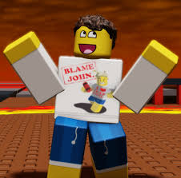
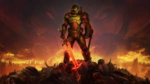

Introduction to Some of my Favourite Game Characters

Shedletsky
Shedletsky is a famous Roblox user who was the former Creative Director at Roblox from 2006 to 2014. He worked as an engineer hired by Roblox until he resigned from his position in May 2014 to pursue a new business venture even though he continues to work with the Roblox Coperation.

Doom Slayer
Doom slayer is the protagonist of his franchise by id Software. He was made by a game creator called John Romero. In his game, Doom Slayer is a space marine who hunts demons and rarely speaks in-game.